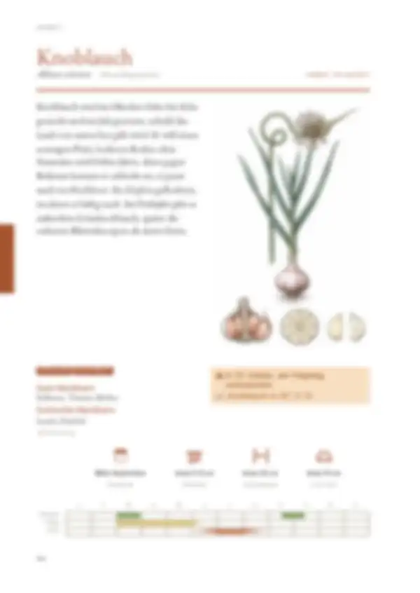
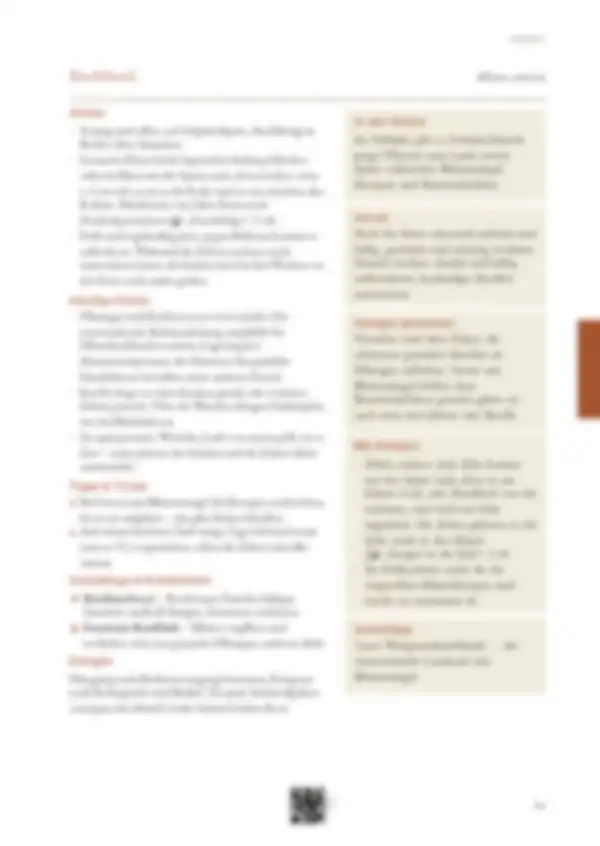

Tippe eine Quelle an, um zu sehen, wo sie verwendet wird – oder tippe auf einen Bereich der Seite.
6 Quellen dieser Doppelseite
Original · abgerufen am 26.10.2026 · ● belegtVerwendet in: Zusammenfassung (Seite allgemein), Piktogramm-Leiste, Monatsleiste, Anbau, In der Küche, Anbau, Punkt 1, Anbau, Punkt 2, Vorrat, Anbau, Punkt 3, Häufige Fehler, Saatgut gewinnen, Häufige Fehler, Punkt 1, Häufige Fehler, Punkt 2, Häufige Fehler, Punkt 3, Tipps & Tricks, Tipps & Tricks, Punkt 1, Schädlinge & Krankheiten, Schädlinge & Krankheiten, Punkt 1, Sortentipp, Schädlinge & Krankheiten, Punkt 2, Düngen, Düngen, Punkt 1
Original · abgerufen am 26.10.2026 · ◐ ErfahrungVerwendet in: Zusammenfassung (Seite allgemein), Piktogramm-Leiste, Monatsleiste, Anbau, Anbau, Punkt 2, Vorrat, Mit Kindern
Original · abgerufen am 26.10.2026 · ○ ÜberlieferungVerwendet in: Zusammenfassung (Seite allgemein), Nachbarn, Piktogramm-Leiste, Monatsleiste, Anbau, Anbau, Punkt 1, Saatgut gewinnen, Mit Kindern, Tipps & Tricks, Tipps & Tricks, Punkt 2
Original · abgerufen am 26.10.2026 · ◐ ErfahrungVerwendet in: Zusammenfassung (Seite allgemein), Monatsleiste, In der Küche, Vorrat, Häufige Fehler, Häufige Fehler, Punkt 3, Mit Kindern, Tipps & Tricks, Tipps & Tricks, Punkt 1
Original · abgerufen am 28.10.2026 · ◐ ErfahrungVerwendet in: Zusammenfassung (Seite allgemein), Piktogramm-Leiste, Monatsleiste, Anbau, Anbau, Punkt 1, Anbau, Punkt 2, Häufige Fehler, Saatgut gewinnen, Häufige Fehler, Punkt 3, Düngen, Düngen, Punkt 1
Original · abgerufen am 26.10.2026 · ● belegtVerwendet in: Sicherheitshinweis „Knoblauch in Öl“, Geschichte, Seite allgemein
● belegt (Versuch, Fachinstitut) · ◐ Erfahrung (Beratung, Praxis) · ○ Überlieferung. Abschnitte ohne eigene Quellenangabe in den Daten zeigen die Quellen der ganzen Seite („Seite allgemein“).